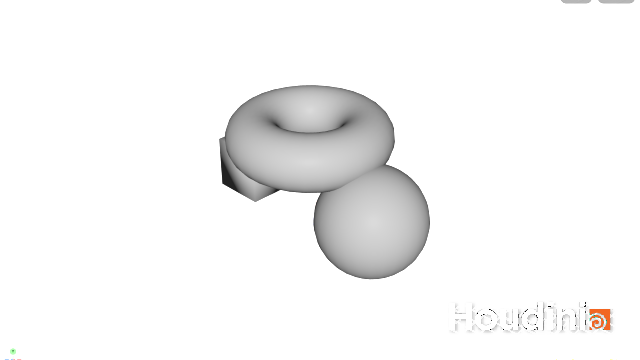

ステージに載せる — SOP から LOP への4つの入口
出典: SideFX 公式ドキュメント How LOPs work / SOP Import / SOP Geometry I/O。 このページは上記を日本語で要約・再構成した学習メモです。ノード名・パラメータ名・挙動は Houdini 22.0.368 で実際にネットワークを組んで確認しています。
この記事で扱うこと
- SOP で作ったジオメトリを Solaris のステージに載せる4つの入口と、その使い分け
sopimport/sopcreate/sopmodify/sceneimportのノード単位の解説- USD 側の階層が何によって決まるのか（ここが最初の関門です）
- 効きそうで効かないパラメータの話
まず、線を流れているものが違う
前回も書きましたが、ここが分からないと全部あやふやになるのでもう一度だけ。
| SOP | LOP | |
|---|---|---|
| 線を流れるもの | ジオメトリ | 合成済みのステージ全体 |
| Merge の意味 | 点と面を足し合わせる | 別々のシーンを合流させる |
| ノードを足すと | 形が変わる | シーンへの編集が1つ追記される |
なので「SOP のジオメトリを LOP に持っていく」のは、ただのコピーではありません。 形の集まりを、名前の付いた入れ子構造に置き換える作業になります。
USD ではこの入れ子のひとつひとつを「プリム」と呼びます。
フォルダとファイルの関係に近いと思ってください。/imported/box_geo のように、
スラッシュ区切りのパスで場所が決まります。
入口が4つあるのは、この置き換えをどこまで面倒みてくれるかが違うからです。
4つの入口
ノードごとの解説
SOP Import sopimport
| やること | 別の場所にある SOP ネットワークの出力を、USD のプリムに変換してステージに載せる |
| 入力 | 0〜1（省略可。省略するとステージを新規に作る generator になります） |
| 要のパラメータ | soppath（読みにいく SOP ノードのパス） |
| 階層の指定 | pathprefix（既定 /$OS）— ただしチェックボックスを入れないと効きません |
| Kind | kindschema の既定は component |
| 向いている場面 | すでに /obj に作ってある SOP をそのまま使いたいとき |
このノードは、2つの仕事を続けてやっています。
- SOP のジオメトリを、USD のプリム階層に変換する
- 変換したものを、シーンに取り込む
パラメータがやたら多く見えるのは、1 のための設定と 2 のための設定が同じ画面に並んでいるからです。 今どちらの話をしているのかを意識して眺めると、だいぶ読みやすくなります。
SOP Create sopcreate
| やること | ノードの中に SOP ネットワークを持ち、そこで作ったジオメトリを直接ステージに載せる |
| 入力 | 0〜1 |
| 特徴 | /obj を経由しない。マテリアルの割り当てまで内側で完結する |
| 向いている場面 | その LOP ネットワークでしか使わない小さなジオメトリ |
このノードの正体が気になったので、実機で中身を展開してみました。
sopcreate は subnet で、中には次のノードが入っています。
/stage/sopcreate_direct/
├─ input (null, LOP) … 上流のステージ
├─ sopnet (sopnet) … 中に SOP ネットワーク
│ ├─ create (subnet, SOP) … ここに自分のジオメトリを作る
│ └─ OUT (null, SOP)
├─ sopimport (sopimport) … ← 中身は結局これ
├─ materiallibrary (materiallibrary)
├─ assignmaterial (assignmaterial)
├─ loftpayloadinfo1 (loftpayloadinfo)
├─ xform (xform)
└─ output (output)つまり SOP Create は「SOP ネットワーク＋ SOP Import ＋ Material Library ＋ Assign Material」の詰め合わせでした。
中核は sopimport なので、SOP Import の挙動を理解しておけば SOP Create もそのまま分かります。
Solaris にはこの「便利ノードの中身は既存ノードの組み合わせ」というパターンが何度も出てきます。
のちに出てくる karma LOP も同じ作りです。詰まったら中に入って見てみると、たいてい腑に落ちます。
SOP Modify sopmodify
| やること | ステージ上のプリムを SOP に取り出し、SOP で編集して、またステージに書き戻す |
| 入力 | 1（必須。編集対象のステージ） |
| 向いている場面 | USD で読み込んだジオメトリに Houdini の SOP 処理をかけたいとき |
「載せる」というより「往復する」ノードです。他所から来た USD アセットに デフォームやスキャッタをかけたい、といったときの逃げ道になります。
Scene Import sceneimport
| やること | /obj のオブジェクト・カメラ・ライト・マテリアルをまとめてステージに持ち込む |
| 向いている場面 | 既存の /obj シーンをとりあえず Solaris に持っていきたいとき |
| 注意 | 手軽な代わりに、取り込みの細かい制御はできません |
公式ドキュメントも「1ノードでジオメトリとマテリアルを取り込めるが、 取り込み過程の制御は SOP Import ほど効かない」という趣旨の書き方をしています。 移行の第一歩には便利ですが、本番の組み方としては SOP Import 系に寄せるのが素直かなと思います。
Merge merge
SOP の Merge と名前は同じですが、合流するのはジオメトリではなくステージです。 別々に組んだブランチのレイヤーをまとめる役で、Solaris ではほぼ必ず使います。 レイヤーの話は次回に回します。
実機で確かめたこと1 — 階層は SOP 側のアトリビュートで決まる
ここが個人的にいちばん引っかかったところです。
まず、box と sphere を Merge しただけの SOP を sopimport で取り込んでみました。
結果がこちらです。
/imported (Xform, kind = component)
└─ mesh_0 (Mesh) ← box と sphere が1つに潰れている2つ入れたのに、出てきたプリムは1つ。名前も mesh_0 という機械的なものです。
理由は単純でした。ジオメトリのどこにも「名前」が書いてなかったからです。 名前が無いので分けようがなく、まとめて1つにされた、というわけですね。
そこで SOP 側に name SOP を2つ足して、それぞれ box_geo / sphere_geo を
付けてから、同じように取り込み直しました。
/imported (Xform, kind = component)
├─ box_geo (Mesh)
└─ sphere_geo (Mesh)きれいに分かれました。ルールは単純で、name の文字列が、そのまま USD のプリム名になるだけです。
もっと深い階層が欲しいときは、name の代わりに path アトリビュートを使います。
建物/1階/柱 のようにスラッシュ区切りで書けば、そのとおりの入れ子ができます。
公式ドキュメントでは、Connectivity SOP でパーツ番号を振ってから
Attribute Create SOP で文字列を組み立てる例が紹介されています。
逆に言うと、Solaris で思った階層にならないときは、まず SOP 側を疑うのが早いです。 LOP 側のパラメータをいくら探しても出てきません。
実機で確かめたこと2 — 効きそうで効かないパラメータ
最初、取り込み先を変えようとして primpath に /imported と入れました。
ところが結果は /sopimport_from_obj のまま。ノード名から作られた既定値が使われていて、
入力した値はまったく反映されていませんでした。
正解は pathprefix の方で、しかも左側のチェックボックスを入れないと効きません。
チェックを入れて /imported にしたところ、期待通りプリムが移動しました。
| パラメータ | 結果 |
|---|---|
primpath に /imported | 効かない（Load As Reference が off のとき） |
enable_pathprefix ＋ pathprefix に /imported | 効く |
このチェックボックスには意味がありました。値をどこから取ってくるかの切り替えスイッチです。
| チェック | 使われる値 |
|---|---|
| 外れている | まずジオメトリ側に埋め込まれた値を探す。無ければ既定値 |
| 入っている | ジオメトリ側を無視して、ここに入力した値を使う |
ジオメトリ側に値を埋めるには USD Configure SOP を使います。
つまり設定を書ける場所が SOP 側と LOP 側の2か所あって、
チェックボックスはどちらを優先するかを決めていた、ということですね。
アセットごとに設定を持たせたいときは SOP 側、その場で変えたいときは LOP 側、と使い分けられます。
sopimport にはこの enable_〜 付きのパラメータが数十個あります。
「値を入れたのに効かない」と思ったら、まずチェックボックスを見る、と覚えておくと早いです。
組んだ結果
SOP Create（トーラス）と SOP Import（箱と球）を Merge して、SOP Modify を通した状態です。

ステージ上のプリムはこうなりました。出所の違う2系統が、1つのシーングラフに同居しています。
/sopcreate_direct (Xform, kind = component)
└─ torus_geo (Mesh) ← SOP Create 由来
/imported (Xform, kind = component)
├─ box_geo (Mesh) ← SOP Import 由来
└─ sphere_geo (Mesh)/HoudiniLayerInfo というプリムも一緒に出てきますが、これは Houdini が内部で使う
メタデータ用のもので、こちらで触るものではありません。
詰まりやすいポイント
- プリムが1つに潰れる → SOP 側に
nameかpathのプリミティブアトリビュートを付ける。 LOP 側では解決できません。 - パラメータを変えても効かない → 左のチェックボックスが外れていないか。
sopimportのenable_〜系はすべてこの挙動です。 primpathとpathprefixを取り違える → 参照として読み込む場合とそうでない場合で、 効くパラメータが変わります。まずpathprefixを疑うのが確率が高いです。- SOP Create の中身が分からなくなる → subnet なので中に入れます。
困ったら
sopimportのパラメータを直接見にいくのが確実です。
次回
ステージには載りました。次はその編集がどのレイヤーに書き込まれているのかという話です。 Solaris でいちばん躓きやすいところで、Layer Break を理解すると 「書き出したら余計なものまで入っていた」が起きなくなります。